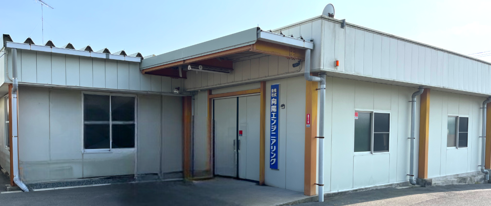
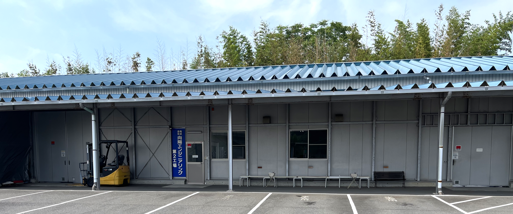
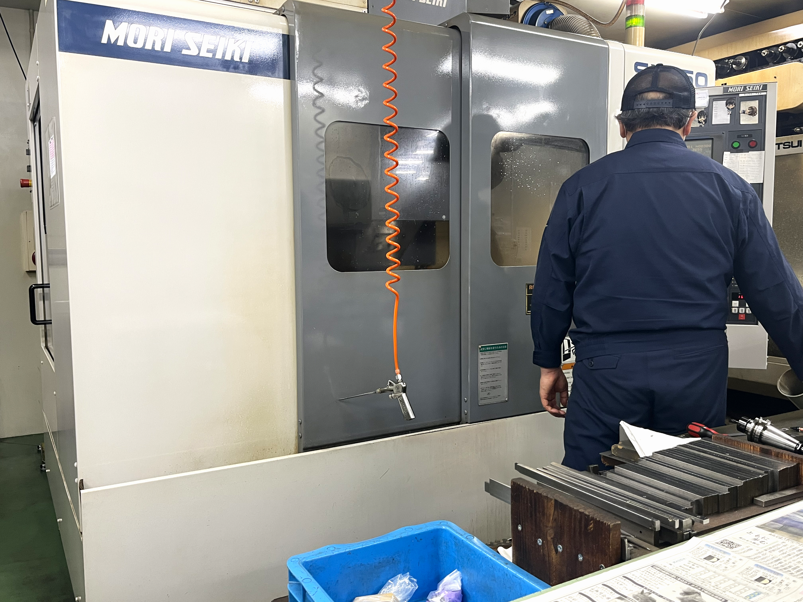
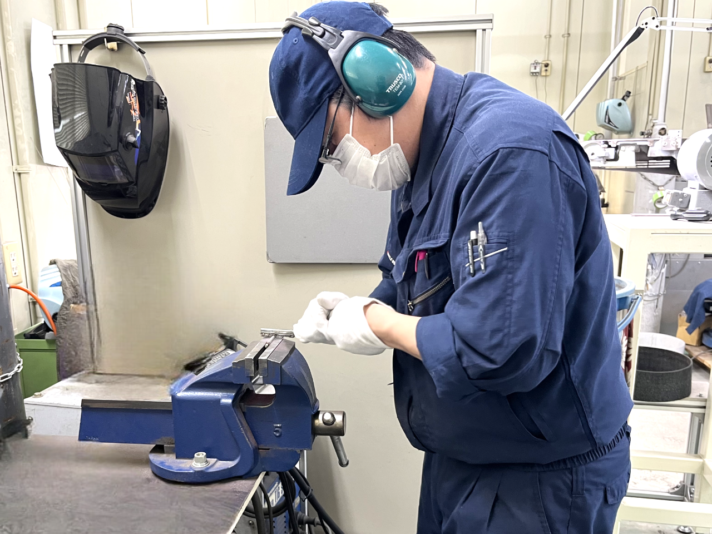
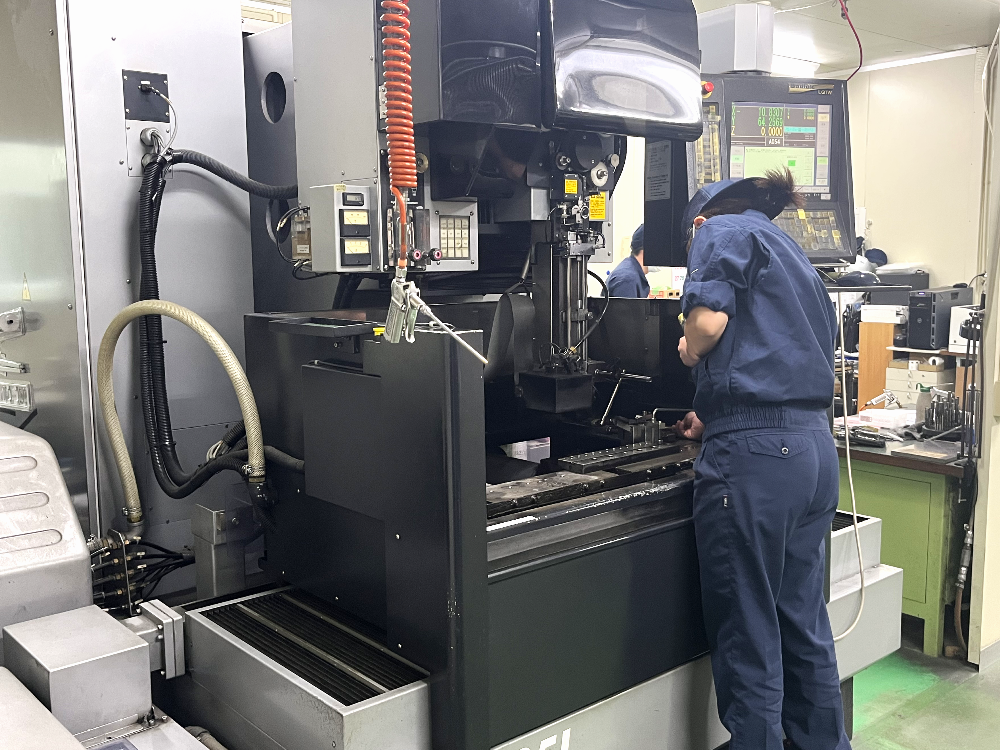
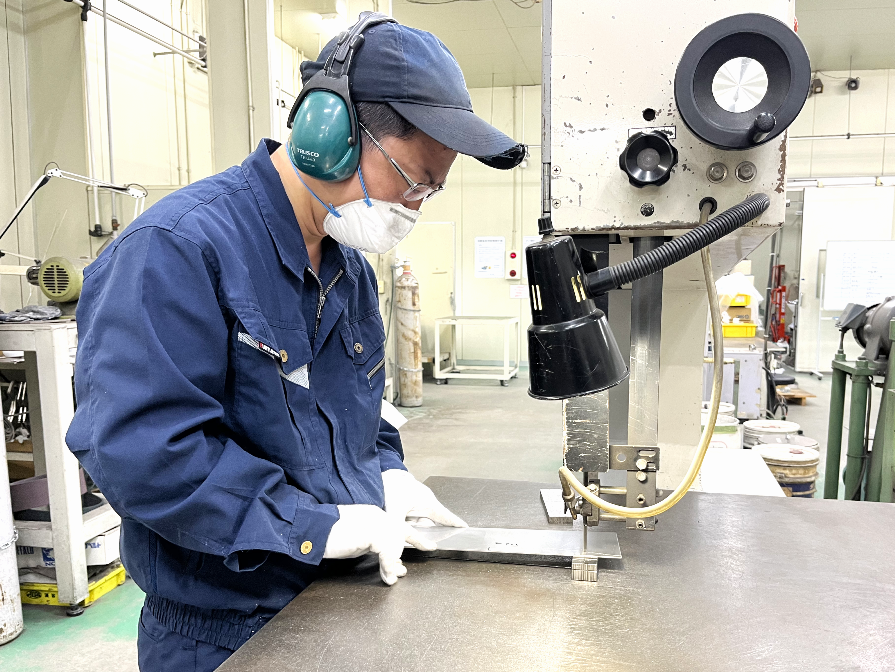
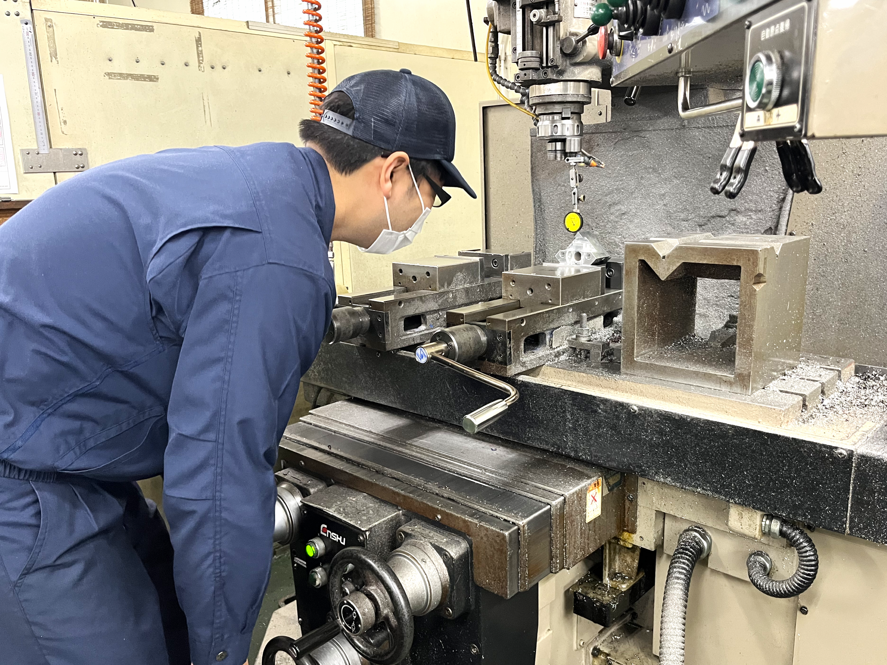
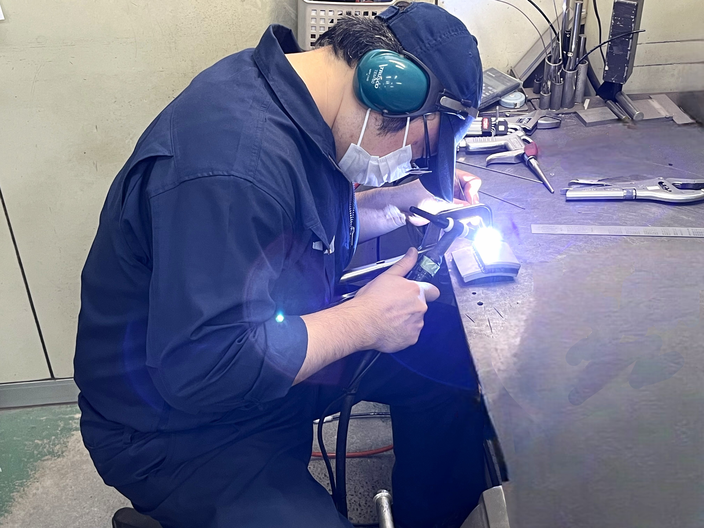

日々の仕事が、"自信"と"つながり"を育てるように。
私たちは、安心して働ける環境と、挑戦できるチャンスをつくり、
一人一人が「ここにいていい」と思える職場を育てていきます。
その積み重ねが、地域や社会に小さくても確かな幸せを広げると信じています。
部品を一つずつ手作業で並べるのは、大変で時間もかかります。
私たちが設計・製作しているパーツフィーダは、そんな作業を自動でスムーズにしてくれる装置です。
たとえばネジや金具などの小さな部品を、バラバラな状態からきれいに整えて、
決まった向きで機械に送り出す役割を持っています。
製品ごとに部品の形が違うため、毎回調整する必要があります。
その分、一つの装置を丁寧に手掛ける面白さがあります。
製造機械や装置を支えているのは、ミリ単位の精度で作られる金属部品たちです。
私たちは、そんな高精度な部品を加工・製作する仕事も行っています。
図面を基に、工具やNC旋盤などの工作機械を使いながら、
寸法を正確に仕上げていくこの作業は、集中力と丁寧さが求められます。
一見地味ですが、品質を決める重要な工程であり、
自分の手で作った部品が製品として動く喜びを感じられる仕事です。
作業現場で「もっとラクに」「もっと正確に」作業を進めるために必要なのが、
自動化装置（自動機）や位置決めツール（治具）です。
私たちは、お客様の「これを自動化できないか？」という相談に応じて、
目的に合わせた装置や治具を一から設計・製作しています。
たとえば、同じ作業を繰り返す機械や、部品を正しく固定する専用台など、
”あったら便利”を「かたち」にする仕事です。
現場の声を「かたち」にできる、提案型のものづくりとしてやりがいも大きく、
自分のアイデアが活かされる瞬間もたくさんあります。








もし、少しでも「気になるな」という気持ちがあれば、まずは話や見学をしてみませんか？